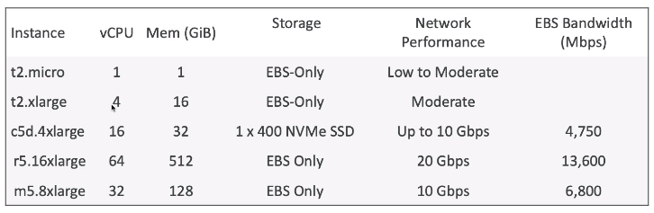
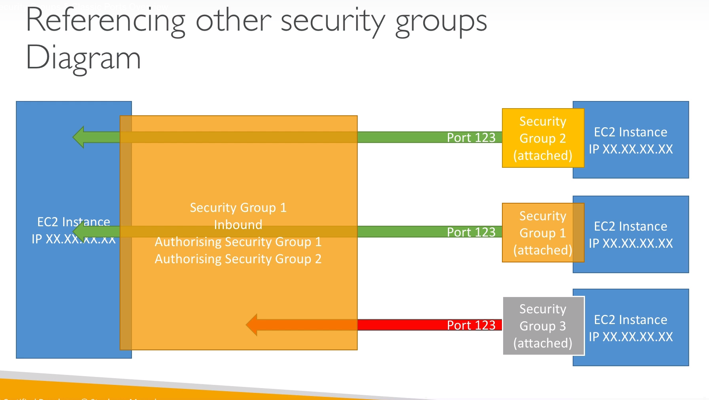
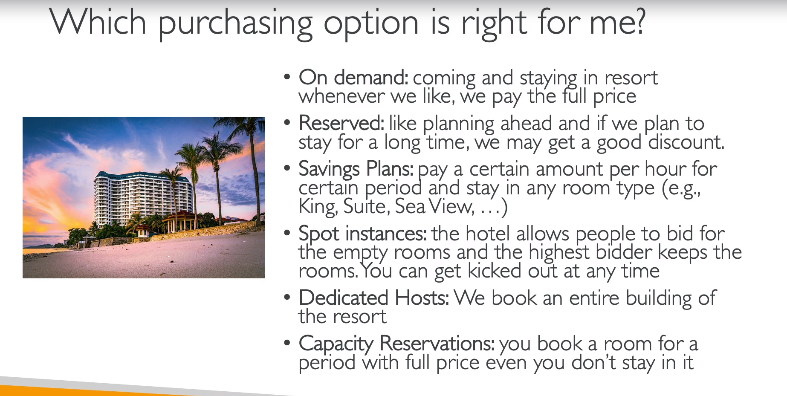

🌿 What?
- 🌱 EC2 - Elastic Compute Cloud - Infrastructure as a Service.
- 🌱 Là một trong những Services được thuê nhiều nhất của AWS.
- 🌱 Service này chủ yếu được sử dụng để:
- Thuê virtual machines(EC2)
- Lưu dữ liệu trên virtual drives(EBS - Elastic Block Store)
- Phân phối tải tới các máy ảo(ELB - Elastic Load Balancing)
- Auto-scaling group (ASG)
🌿 EC2 sizing & Configuration options
- 🌱 OS: Linux, Windows hoặc Mac OS.
- 🌱 CPU: Cần tốc độ xử lý thế nào?
- 🌱 RAM: Cần bộ nhớ đệm bao nhiêu?
- 🌱 Storage space:
- Network-attached (EBS & EFS - Elastic File System)
- Hardware (EC2 Instance Store)
- 🌱 Network Card: tốc độ, Public IP address.
- 🌱 Firewall rules: bảo mật
- 🌱 Boootstap script(chạy 1 lần đầu tiên khi launch): EC2 User Data
🌱 EC2 User Data
- Chạy một số câu lệnh khi một máy ảo khởi chạy.
- Script này chỉ chạy 1 lần duy nhất khi máy ảo khởi chạy lần đầu tiên.
- Mục đích thường là để:
- Installing updates
- Installing software
- Downloading common files from the internet
- Hay bất kỳ tác vụ nào mà chúng ta muốn chạy.
- Root user sẽ chạy EC2 User Data Script.
🌿 EC2 instance types

- 🌱 Choosing the kind of intance that fits best your application.
- 🌱 Naming convention: ví dụ: m5.2xlarge
- m: instance class
- 5: gen 5
- 2xlarge: size của instance(size, memory, CPU)
- 🌱 Có 7 types.
🍃 General Purpose Type
- Sử dụng cho đa dạng workloads như web servers hoặc code repositories( hiểu là những tác vụ không có yêu cầu đặc biệt).
- Cân bằng giữa:
- Compute
- Memory
- Networking
🍃 Compute Optimized Type
- Sử dụng cho những ứng dụng có yêu cầu cao về hiệu suất tính toán, xử lý(CPU). Ví dụ như:
- Batch processing workloads (tác vụ xử lý dữ liệu hàng loạt)
- Media transcoding
- Web servers hiệu năng cao
- HPC - High performance computing
- Machine Learning & Modeling (mô hình hóa)
- Gaming servers
- Instance class: C (CPU)
🍃 Memory Optimized Type
- Sử dụng cho những ứng dụng có yêu cầu cao về tốc độ xử lý những bộ dữ liệu lớn trong bộ nhớ(RAM). Ví dụ như:
- Cần high performance để xử lý dữ liệu.
- Ứng dụng cần xử lý real-time với những bộ dữ liệu không cấu trúc lớn.
- Databases optimized for BI(business intelligence)
- Instance class: thường là R (RAM)
🍃 Storage Optimized Type
- Sử dụng với những ứng dụng thường xuyên phải tương tác với dữ liệu(đọc, ghi) ở local storage. Ví dụ như:
- Hệ thống xử lý transaction online (OLTP).
- Databases(Relational & NoSQL)
- Cache dữ liệu(Redis)
- Data warehousing
- Lưu files.
🌿 Security Groups
🍃 Overview
- 🌱 Là nền tảng an ninh mạng của AWS.
- 🌱 Kiểm soát cách traffic tương tác với các EC2 Instances của chúng ta.
- 🌱 Security groups chỉ chứa allow rules.
- 🌱 Rules có thể tham chiếu theo IP hoặc Security Group.
🍃 Deeper dive
- 🌱 Hoạt động như một “firewall” bảo vệ cho EC2 Intances.
- 🌱 Qui định:
- Truy cập vào các cổng
- Trao quyền IP ranges - IPv4 và IPv6
- Kiểm soát inbound connect (từ bên ngoài vào instance)
- Kiểm soát outbound connect (từ instance ra bên ngoài)
🍃 Good to know
- 🌱 Có thể attached tới nhiều instances.
- 🌱 Locked down một khu vực
- 🌱 Sẽ tốt hơn khi có một security group riêng để truy cập bằng SSH
- 🌱 Nếu app của bạn ko truy cập được(time out), có thể security group có vấn đề.
- 🌱 Nếu app nhận được “connection refused”, là do app có vấn đề hoặc EC2 intance chưa được launched.
- 🌱 Mặc định tất cả inbound traffic sẽ bị blocked.
- 🌱 Mặc định tất cả outbound traffic được thông qua.

🍃 Classic Port
- 🌱 22 = SSH - log into a Linux instance
- 🌱 21 = FTP (File Transfer Protocol) - upload files
- 🌱 22 = SFTP (Secure File Transfer Protocol)
- 🌱 80 = HTTP
- 🌱 443 = HTTPS
- 🌱 3389 = RDP (Remote Desktop Protocol) - log into a Windows intance.
🌿 Purchasing Options
- Cần lựa chọn các phương án phù hợp với nhu cầu sử dụng và tối ưu chi phí.
🍃 On-Demand Instances
- 🌱 Đoán trước được chi phí, dùng đến đâu trả đến đấy.
- Nếu dùng Linux or Windows - trả tiền theo từng giây, sau phút đầu tiên
- Tất cả OS còn lại - trả tiền theo giờ.
- 🌱 Có giá cao nhất khi không thanh toán trước.
- 🌱 Không cần phải cam kết thời gian sử dụng.
- 🤔 Nên sử dụng cho short-term và un-interrupted workloads, những dự án chúng ta không thể dự đoán được triển vọng tương lai cũng như yêu cầu tài nguyên:
- Dự án kiểm thử.
- Dự án cần triển khai nhanh nhưng có thể đóng bất kì lúc nào.
🍃 Reserved Instances (1 & 3 years)
-
🤔 Sử dụng cho các dự án dài hạn, vì thuê thời gian dài nên AWS sẽ discount tùy theo thời gian chúng ta thuê là bao lâu. Các dự án ví dụ như:
- Một trang blog
- Duy trì một database
-
Rẻ hơn nhiều so với On-demand instances.
-
Có thể chọn attributes(type, region, OS,tenancy)
-
Càng thuê nhiều năm càng được discount nhiều.
-
No upfront(+), Partial Upfront(++), All Upfront(+++)
-
Lựa chọn đuọc phạm vi: region, zone.
-
Có thể mua hoặc bán trên Reserved Instance Marketplace tùy theo nhu cầu.
-
Convertible Reserved Instances - long workloads
- flexible instances(có thể thay đổi được type, OS, family, tenancy của instance)
🍃 Savings Plans(1 & 3 years)
- Long workloads.
- Discount dựa theo thời gian sử dụng(thuê càng lâu càng rẻ)
- Cam kết về số lượng sử dụng(vd 10$/hour for 1 - 3 years)
- Bất kì chi phí phát sinh nào sẽ tính theo giá của On-Demand instances.
- Chỉ định được instance family và region(vd M5 in us-west-1)
- Có thể thay đổi:
- Instance size(m5.xlarge, m5.2xlarge)
- OS
- Tenancy(Host, Dedicated, Default)
🍃 Spot Instances
- Short workloads.
- Lựa chọn rẻ nhất.
- Có thể hiểu option này chúng ta sẽ thuê những EC2 Instances chưa có người sử dụng, cta sẽ đấu giá nó là 1$ để xài, nếu không có người trả giá cao hơn thì vấn có quyền sử dụng. Nếu ai trả cao hơn thì mất luôn 😗
- Phù hợp với những servers chạy các tác vụ sẽ chạy lại khi có lỗi.Hoặc dự án thử nghiệm, không quan trọng khi bị dừng đột ngột.
- Jobs
- Image processing
- Không phù hợp với những công việc quan trọng hoặc sử dụng cho database.
🌱 Terminate Spot Instances
- Phải cancel spot request trước(có thể launch instances), việc này sẽ không terminate các EC2 Instances. Sau khi cancel, chúng ta tiếp theo mới thực hiện terminate các Instances.
🌱 Spot Fleets
- Spot Fleets = Spot Instances + (optional) On-Demand Instances
- Đạt được target capacity với mức phí hạn chế.
- Stop launching khi đạt ngưỡng tải hoặc hạn mức chi phí.
- Chiến lược sắp xếp Spot Instances:
- lowestPrice
- diversified
- capacityOptimized
- Cho phép chúng ta tự động request Spot Instances với chi phí thấp nhất.
🍃 Dedicated Hosts
- Thuê hẳn một server vật lý.
- Đắt nhất.
- Công ty tổ chức nào có tiền thì xài, hoặc phần mềm có những yêu cầu đặc thù(ví dụ như các phần mềm của chính phủ)
🍃 Dedicated Instances
- Thuê riêng hardware để chạy instances, chỉ mình mình dùng thôi, ko có thằng nào dùng chung hardware với mình cả.
🍃 Capacity Reservations
- Có thể đặt trước ở một AZ bất kỳ thời gian nào.
- Truy cập vào EC2 bất cứ khi nào.
- Không cần cam kết thời gian. không có discount.
- Trả tiền theo tỉ lệ của On-Demand

🌿 Some notes
- 🌱 Khi start lại một EC2 Instance, Private IPv4 giữ nguyên còn Public IPv4 có thể bị thay đổi.